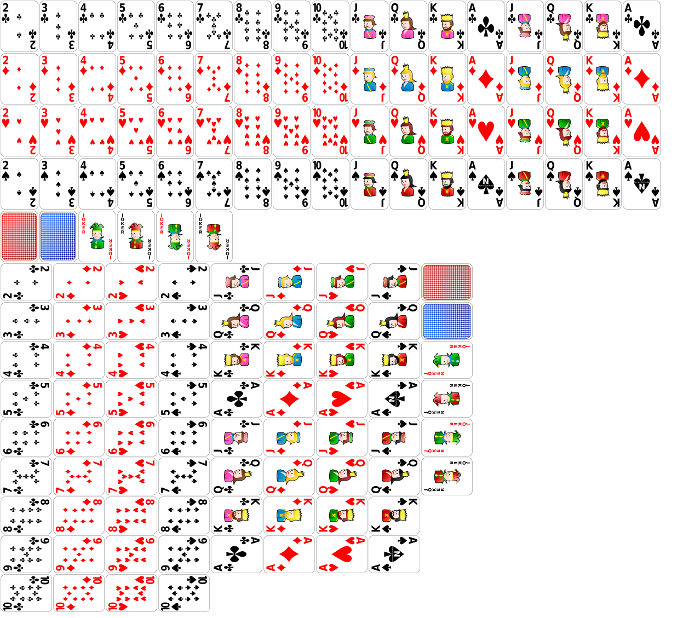

cards.js is a library to write card games in javascript. It's not a framework, it does not try to tell you how to write your game logic, it's only about rendering playing cards, animating them and giving you a nice and simple way to use them in your games. Below you can see and play with an interactive demo. We also have documentation and annotated source code for a full game, a simplified version of Crazy Eights called Borderline Eights.
//Start by initalizing the library
cards.init({table:'#card-table'});
//Create a new deck of cards
deck = new cards.Deck();
//cards.all contains all cards, put them all in the deck
deck.addCards(cards.all);
//No animation here, just get the deck onto the table.
deck.render({immediate:true});
//Now lets create a couple of hands, one face down, one face up.
upperhand = new cards.Hand({faceUp:false, y:50});
lowerhand = new cards.Hand({faceUp:true, y:350});
//Deck has a built in method to deal to hands.
deck.deal(5, [upperhand, lowerhand], 50)
//Lets setup a handler to draw cards
deck.click(function(card){
if (card === deck.topCard()) {
lowerhand.addCard(deck.topCard());
lowerhand.render();
}
});
alert('Try clicking the deck now');
//Let's move the deck and setup a discard pile
deck.x -= 50;
deck.render();
discardPile = new cards.Deck({faceUp:true});
discardPile.x += 50;
deck.render({callback:function() {
discardPile.addCard(deck.topCard());
discardPile.render();
}});
//Lets allow you to send cards to the discard pile
lowerhand.click(function(card){
if (card.suit == discardPile.topCard().suit
|| card.rank == discardPile.topCard().rank) {
discardPile.addCard(card);
discardPile.render();
//lowerhand.render();
}
});